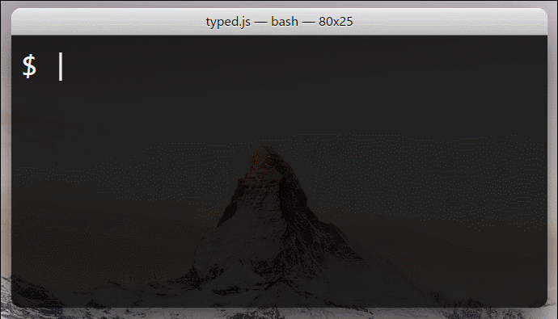

演示

Typed.js是一款可以模拟输入效果的jQuery插件。流程是输入字段，删除字段，输入新的字段，可以无限循环或者在最后一个字段结束。
安装
非常简单
<script src="jquery.js"></script> <script src="typed.js"></script> <script> $(function(){ $(".element").typed({ strings: ["First sentence.", "Second sentence."], typeSpeed: 0 }); }); </script> ... <span class="element"></span>
|
默认光标是竖线，如果想让它闪起来，加入下面这段代码：
.typed-cursor{ opacity: 1; -webkit-animation: blink 0.7s infinite; -moz-animation: blink 0.7s infinite; animation: blink 0.7s infinite; } @keyframes blink{ 0% { opacity:1; } 50% { opacity:0; } 100% { opacity:1; } } @-webkit-keyframes blink{ 0% { opacity:1; } 50% { opacity:0; } 100% { opacity:1; } } @-moz-keyframes blink{ 0% { opacity:1; } 50% { opacity:0; } 100% { opacity:1; } }
|
结束语
这款插件逼格满满，你还可以更改它的参数使其更加个性化。
更多的信息请移步官网或Github页面。